...


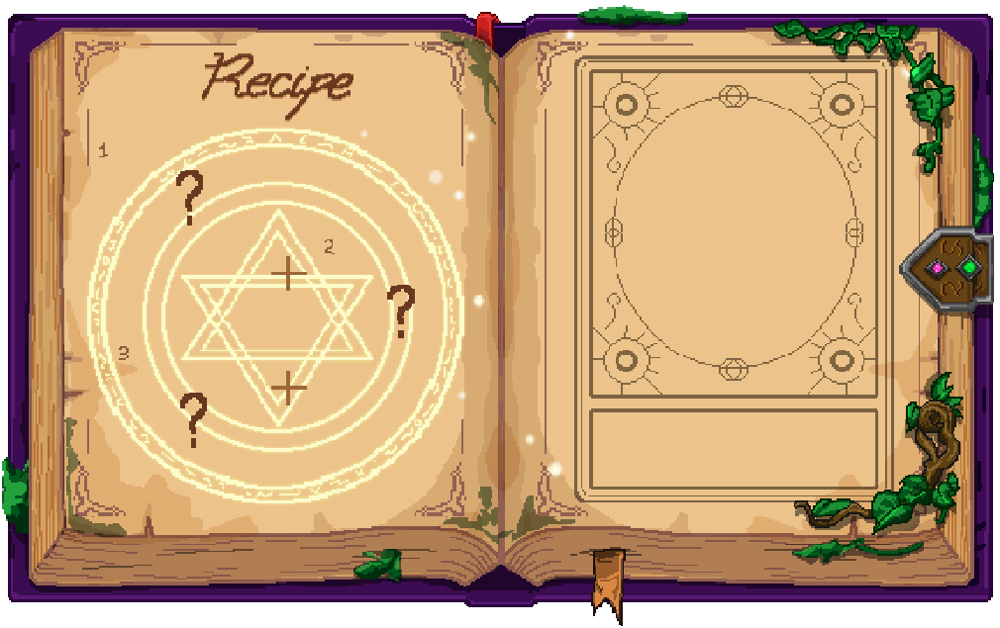
..........
체력 회복 포션
모든 상처를 즉시 회복시키는 신비한 초록 물약입니다.
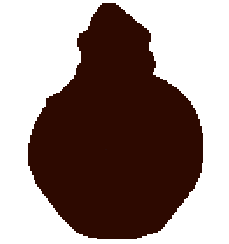
..........
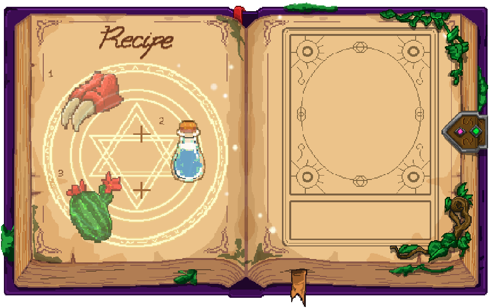
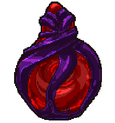
힘의 포션
힘이 증가해 가하는 공격이 강해집니다.
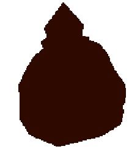
..........
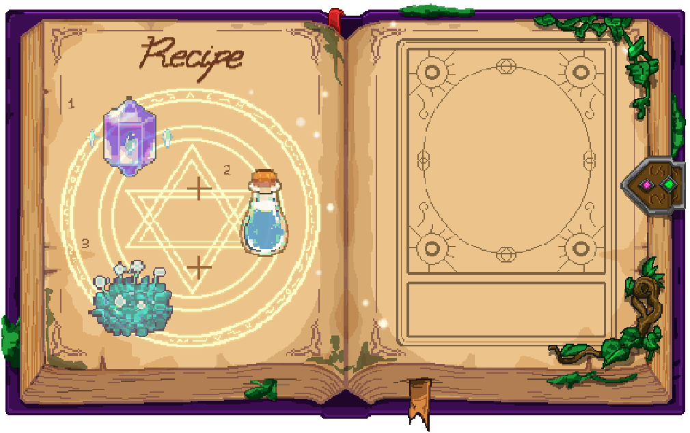
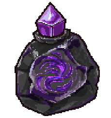
마력 증폭의 포션
일시적으로 마력 회복 속도와 마법의 위력이 대폭 상승합니다.
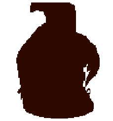
..........
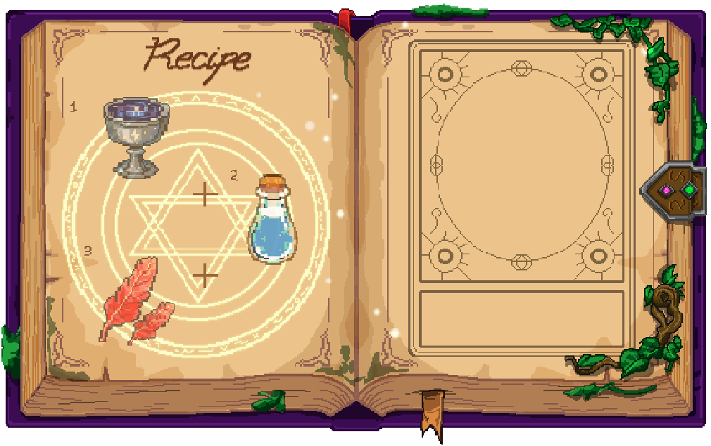
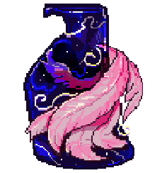
신성한 불사 포션
아무리 큰 상처에도 죽지 않으며 모든 피해를 회복시킵니다.
..........
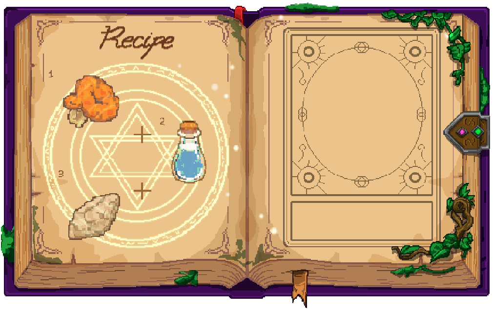
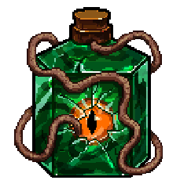
맹독성 부식 포션
마시거나 장비에 바르면 강력한 중독 및 부식을 일으킬 수 있습니다.
..........
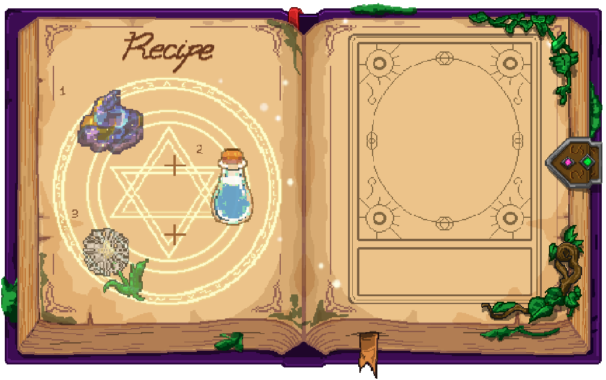
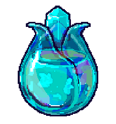
환수의 영양 포션
마법 생물이나 환수에게 먹이면 소환수의 성장이 빨라집니다.
..........
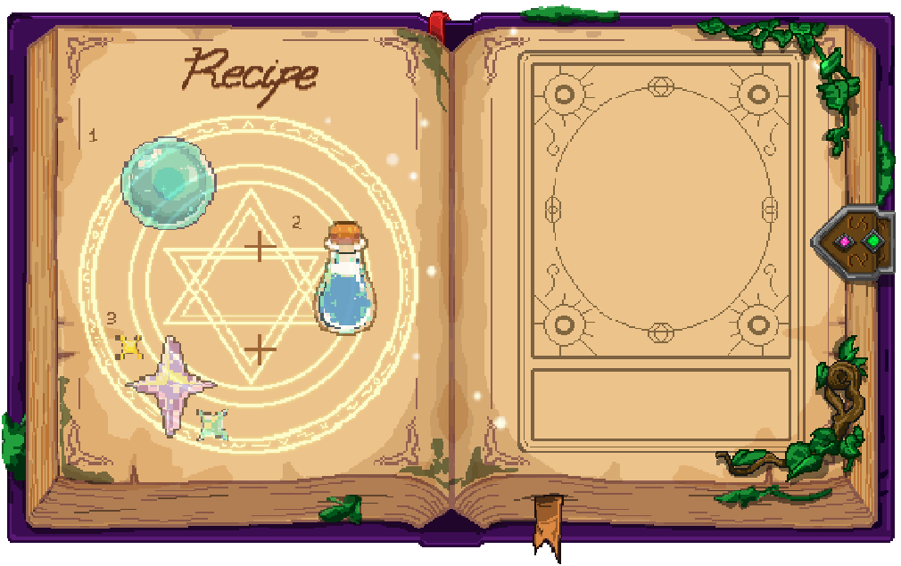
피부활력증가 포션
마시면 피부에 생기가 생기고 건강해 보입니다.
..........
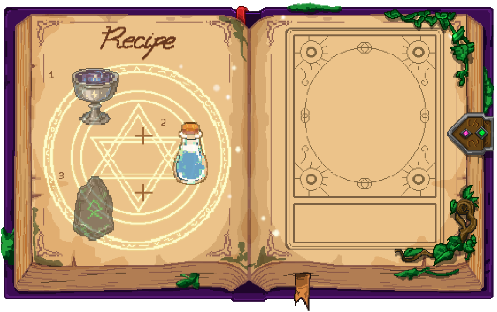
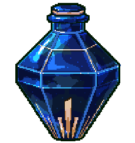
신성한 정화수
모든 저주와 저주받은 장비를 즉시 정화합니다.
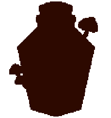
..........
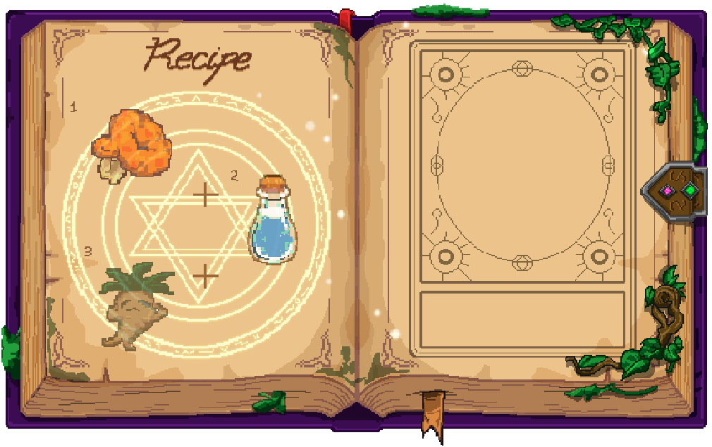
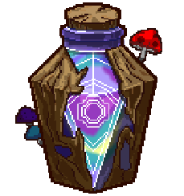
환각의 마법 포션
마신 적에게 심한 환각을 일으켜 서로 공격하게 만드는 혼란 상태에 빠뜨립니다.
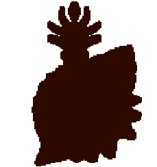
..........
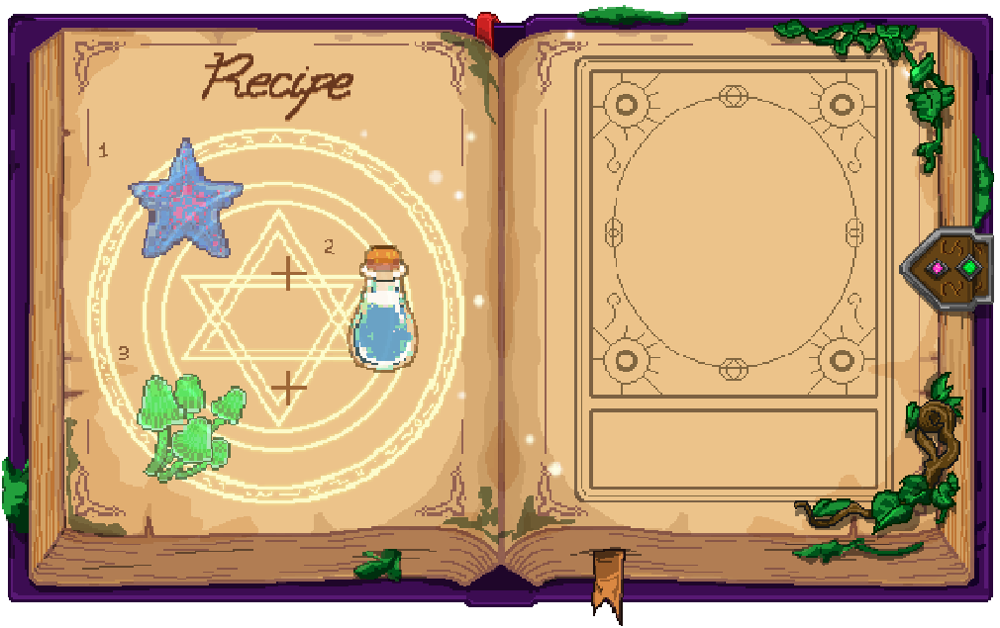
바다의 축복 포션
마시면 물속에서 숨을 쉴 수 있고 이동 속도가 빨라집니다.
..........
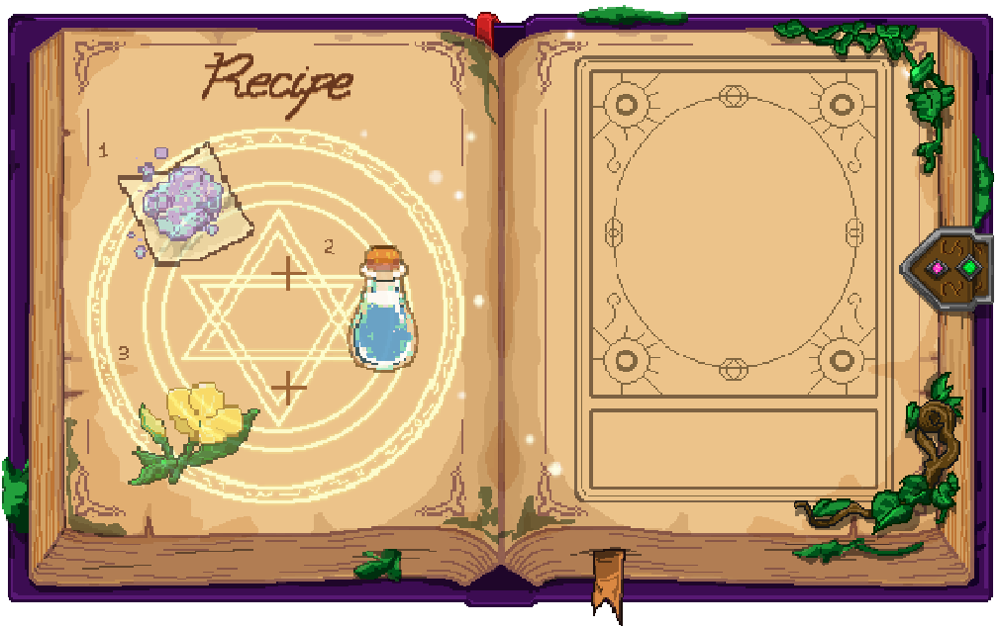
광명의 각성 포션
마시면 시야가 매우 밝아져 어두운 곳에서도 낮과 같이 볼 수 있습니다.
..........
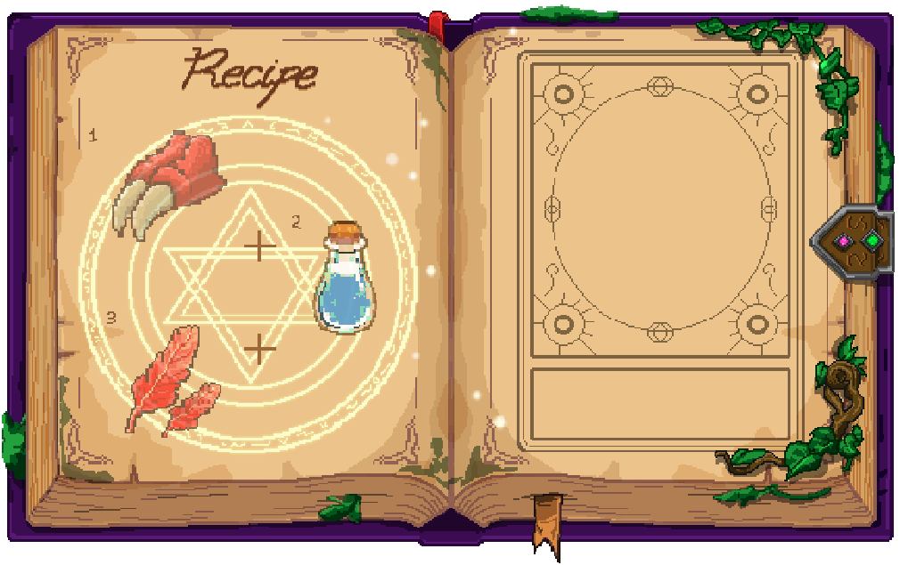
화염 내성 포션
일시적으로 화염으로부터 보호받습니다.
..........
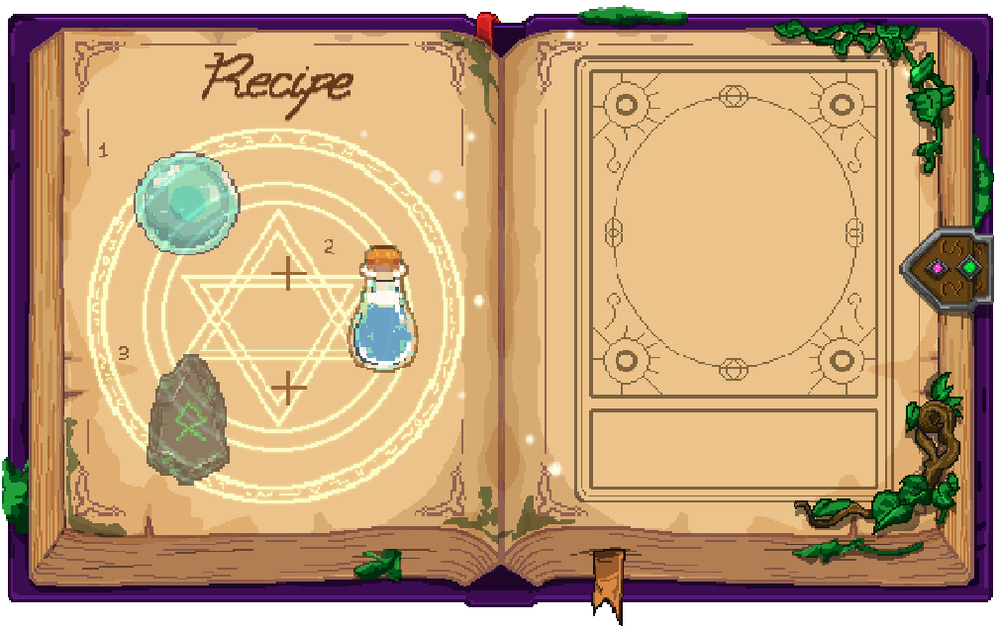
충격파 방출 포션
바닥에 던지면 넓은 범위로 강력한 마력 충격파를 방출하여 주변 적을 밀쳐냅니다.
..........
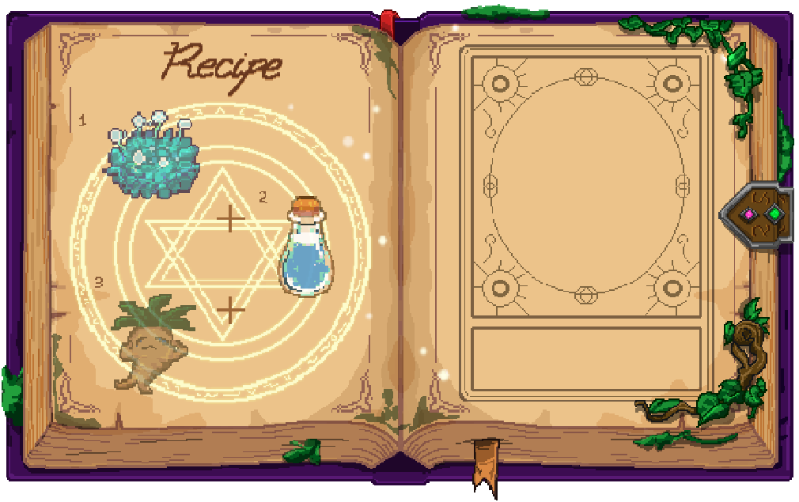
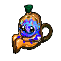
환각성 음파 포션
마신 자의 목소리를 기이한 음파로 바꾸어 주변 적들에게 공포를 줍니다.
..........

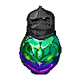
수호의 갑옷 포션
피부가 단단해지며 물리 방어력이 크게 상승합니다.
..........

정신 진정 연고
상처 부위에 바르면 정신적 공포와 수면 장애를 해소해 줍니다.
..........

신체 강화 알약
단단하게 뭉쳐 복용하면 일시적으로 근력과 방어력이 대폭 상승합니다.

..........


해독 가루 환
체내에 침투한 치명적인 독을 즉시 흡수하여 배출시킵니다.

..........


마법 감응 분말
마력에 대한 감응력이 증가하고 마법의 위력이 강해집니다.

..........


초기 성장의 비약
식물이나 작은 정령에게 뿌리면 빠른 성장을 촉진하는 유기농 영양제입니다.
..........

불사조의 알약
굳혀 만든 결정 알약으로, 복용 시 천천히 힘이 차오릅니다.

..........


마비 독 가루
무기 표면에 바르거나 던지면 적을 일시적으로 완전 마비시킵니다.

..........


마력 흡수 연고
피부에 바르면 주변 마력으로 회복을 촉진합니다.

..........


야간 시야 분말
눈 주위에 바르면 칠흑 같은 어둠 속에서도 완벽한 시야를 확보합니다.

..........


생명 각성 젤리
쫀득하게 응축한 고체 약으로, 섭취 시 최대 체력의 한계를 일시적으로 늘려줍니다.

..........


별빛 응급 연고
상처에 바르면 부위가 별빛으로 치유되며 부상을 즉시 지혈합니다.

..........

성스러운 자양환
먹기 거북하지만 복용 시 허기짐이 즉시 채워지고 힘이 소폭 증가합니다.

..........


신경 마비 가루
적에게 뿌리면 적의 마력 회복을 방해하고 움직임을 느리게 만듭니다.
..........

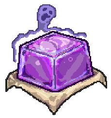
영혼 포착 젤리
굳혀 만든 젤리 형태의 약으로, 보이지 않는 영체를 볼수 있게 됩니다.
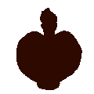
..........

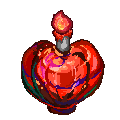
열기 차단 크림
몸 전체에 바르면 화염 및 용암 지대에서 받는 환경 피해를 일정 시간 무효화합니다.